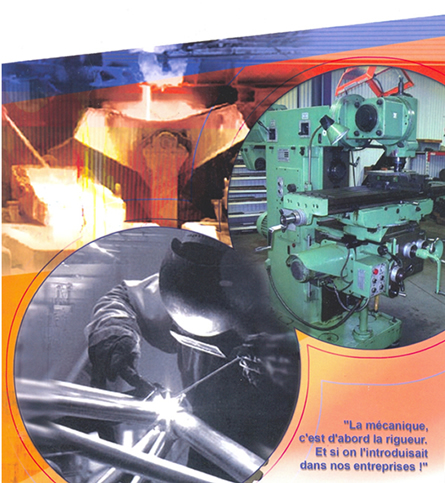
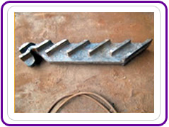
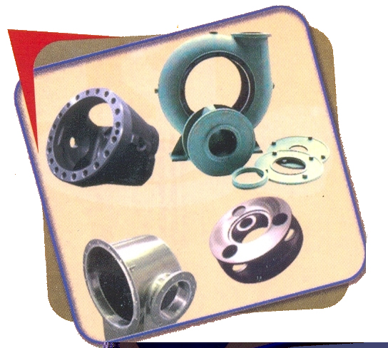
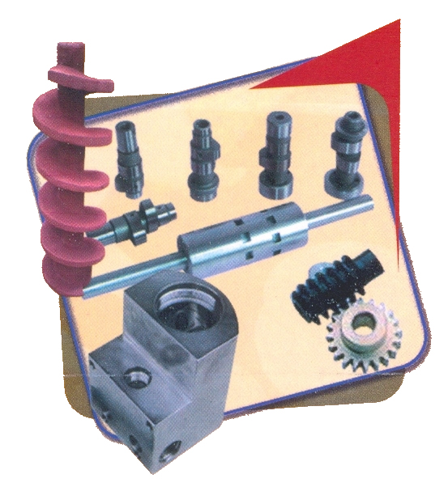
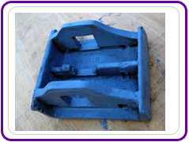
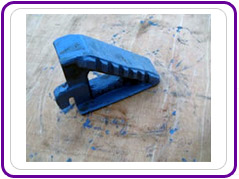
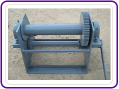
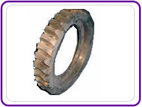
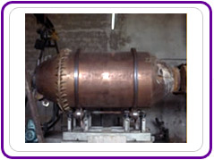
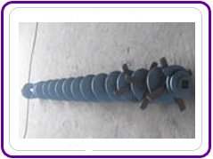

Fonderie · Chaudronnerie · Mécanique générale
Des pièces industrielles façonnées pour durer
Depuis Yopougon, à Abidjan, WAF-METAL fond, soude et usine vos pièces sur dessin ou modèle, et intervient sur site pour la maintenance de vos chaudières, pompes et réducteurs.
- Pièces sur dessin ou modèle
- Équipe technique mobile sur site
- Délais de livraison respectés

Ils nous font confiance
Des industriels de tous les secteurs
Scieries, huileries, caoutchouc, agro-industrie : nos clients comptent sur nous pour garder leurs machines en marche.
Scieries
références en Côte d’Ivoire
9Huileries & agro-alimentaire
références en Côte d’Ivoire
6Sociétés de caoutchouc
références en Côte d’Ivoire
11Autres industries
références en Côte d’Ivoire
Et à l’international : SOGUIPAH (Guinée) · SN-SOSUCO (Burkina Faso) · CODA-SA (Bénin) · NIOTO (Bénin).
Ce que nous fabriquons
Sept domaines, une même exigence
Atelier d’usinage
Pignons, axes, coussinets, crémaillères, roues dentées : pièces mécaniques sur dessin ou modèle.
Découvrir
Chaudières
Grilles, foyers, cendriers, tuyères et pièces de maintenance pour installations de chauffe.
DécouvrirChaudronnerie
Turbines en mécano-soudé, treuils, carters rotatifs et ensembles métalliques assemblés.
DécouvrirFonderie
Grilles et pièces de moulage en fonte, bronze, aluminium, acier et autres métaux.
Découvrir
Pompes
Corps, impulseurs, turbines, diffuseurs, arbres, bagues et presse-étoupe.
Découvrir
Presses
Vis d’alimentation, vis de pression P9, cames, roues et vis sans fin, boîtiers de roulement.
DécouvrirWagonnets
Roues, paliers, bagues, arbres et pièces de rechange pour wagonnets industriels.
DécouvrirUn besoin sur mesure ?
Dessin, modèle ou pièce à remplacer : nous vous répondons avec une proposition.
Demander un devisPourquoi WAF-METAL
Moins de risques, plus de disponibilité
Sur dessin ou modèle
Toute pièce mécanique en fonte, bronze, aluminium ou acier, fabriquée d’après votre dessin ou votre modèle.
Un ingénieur-conseil
À votre écoute pour vous guider vers des pièces de qualité, mieux adaptées à vos contraintes d’utilisation.
Équipe technique mobile
Maintenance industrielle sur site (chaudières, pompes, réducteurs…) dans les normes de sécurité et de qualité en vigueur.
Délais et prix tenus
Un respect rigoureux des délais de livraison et un excellent rapport qualité/prix : c’est ce qui fait la satisfaction de nos clients.
Comment ça marche
De votre besoin à la livraison
Votre besoin
Un dessin, un modèle, une pièce usée ou une panne : vous nous contactez.
Le conseil
Notre ingénieur-conseil étudie votre demande et vous propose la solution adaptée.
La fabrication
Fonderie, chaudronnerie ou usinage : la pièce est réalisée dans notre usine de Yopougon, ou l’équipe intervient sur site.
La livraison
Livraison dans les délais convenus, avec un rapport qualité/prix irréprochable.
Réalisations
Des pièces sorties de nos ateliers






Quelques références
Devis rapide
Un projet ? Une panne ? Parlons-en.
Envoyez-nous votre dessin, votre modèle ou la pièce à remplacer. Notre ingénieur-conseil vous répond avec une proposition adaptée.